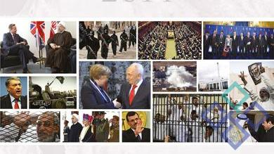

المجلات
Ortadoğu Yıllığı 2014

محرر (محررون): Kemal İnat, Muhittin Ataman
Açılım Kitap
يشترى
مقالات
Bahreyn 2014
Abdullah Erboğa
Birleşik Arap Emirlikleri 2014
Ahmet Üçağaç
Cezayir 2014
Berkan Öğür
Fas 2014
Furkan Polat
Filistin 2014
Kadir Sipahi
Irak 2014
Rıdvan Kalaycı
İran 2014
Mustafa Caner
İsrail 2014
Abdüssamet Pulat
Katar 2014
Mustafa Yetim
Kuveyt 2014
Fahriye Keskin Karagöl
Libya 2014
Bilal Yıldırım
Lübnan 2014
Ayşe Selcan Özdemirci
Mısır 2014
İsmail Numan Telci
Suriye 2014
Nebi Miş, Ömer Behram Özdemir
Suudi Arabistan 2014
Muhittin Ataman, İsmail Akdoğan
Tunus 2014
Rumeysa Köktaş
Umman 2014
Sefa Mutlu Koca, Özcan Kayalı
Ürdün 2014
Haydar Oruç
Yemen 2014
Fatih Gezgin, Ensar Muslu
Ortadoğu’da Kürtler 2014
Zana Baykal
Suriyeli Mültecilerin Türkiye Basınında Temsili
İsmail Çağlar, Yusuf Özkır
Mısır’da 25 Ocak 2011 Devrimi Öncesi Kilise-Devlet İlişkisi
Ayşenur Hazar
Kürt Meselesinde Şiddetin Söylemsel Kurgulanışı
Taha Baran
Kitap Tanıtımları
Ayşe Aksu, Ünal Tüysüz